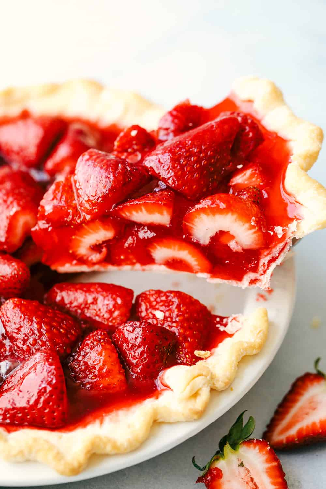

Strawberry Pie

This strawberry pie is my favorite pie, and it's very easy to make. I got the recipe many years ago in North Jersey from the Sussex County Strawberry Farm.
Looking for a simple and humble pie? You’ve found it. It’s filled with fresh, sweet strawberries coated in a light strawberry glaze. A glaze that’s just thick enough to hold the strawberries together, but just loose enough so a couple stray strawberries fall out out onto the plate. It’s not perfect — we love that. Not to mention, those stray strawberries are perfect for swiping through some lightly whipped cream.
This pie is a breeze to make. There are two parts to this recipe — the pie shell and the strawberry filling.
Ingredients
- 1 quart fresh strawberries, hulled
- 1 (9 inch) pie crust, baked
- 1 cup white sugar
- 3 tablespoons cornstarch
- ¾ cup water
- ½ cup heavy whipping cream
Directions
- Arrange 1/2 of strawberries in baked pastry shell. Place remaining strawberries in a medium saucepan.
- Add sugar to the strawberries in the saucepan; place over medium heat and bring to a boil, stirring frequently.
- Whisk cornstarch and water together in a small bowl. Gradually stir cornstarch mixture into boiling strawberry mixture. Reduce heat and simmer mixture until thickened, about 10 minutes, stirring constantly.
- Pour cooked strawberry mixture over berries in pastry shell. Refrigerate until chilled and set, at least 3 hours.
- Before serving, whip cream in a medium bowl until soft peaks form. Serve each slice of pie with a dollop of whipped cream.
Back to top
Home